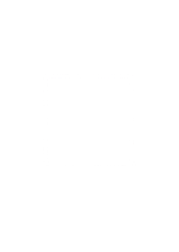
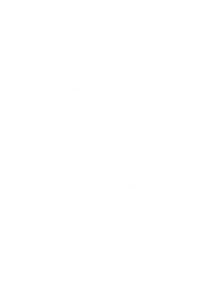
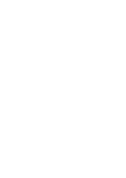
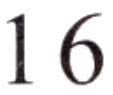

Nǐ hē shuǐ ma?例如： 你喝水吗？
Would you like some water?Хочешь воды?A
14.
你去超市买什么？
15.
你会做饭吗？
今天几号？
第三部分Part IIIЧасть III
第17—18题： 选词填空。Questions 17-18: Choose the correct word to fill in each blank.Задания 17-18: Выберите правильное слово, чтобы заполнить каждый пропуск.
jǐA 几
hǎokànB 好看
míngziC 名字
Nǐ jiào shénme例如： 你叫什么 ( C )？
What is your name?Как тебя зовут?17.
今天 ( ) 号？
18.
029Nǐ de xīn diànnǎo zhēn ( )!男： 你的新电脑真 ( )！Xièxie, wǒ yě hěn xǐhuan.女： 谢谢， 我也很喜欢。